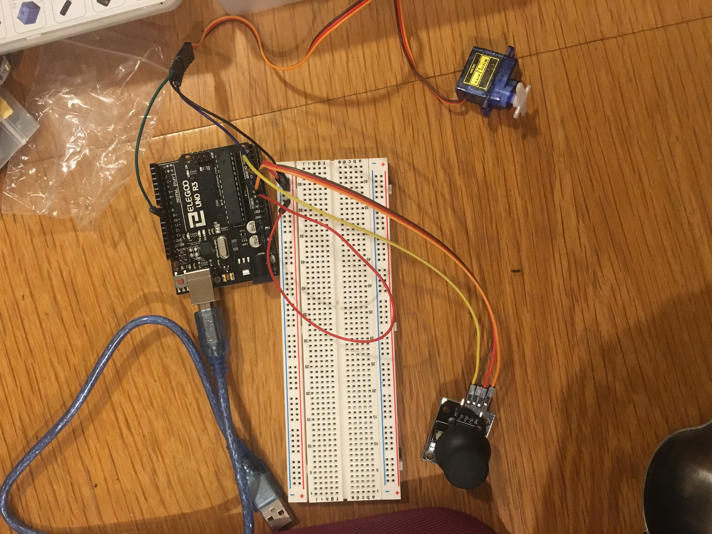

Espen Scheuers's Assignment 5!
Here is a video of assignment 5.

Here are photos of assignment 5.

The LED strip is shown in the schematic labeled as load then shown in a cut out. The transistor can provide .6A, but this cicuit only uses about .1A.
LED strip uses 18 watts for 300 LEDs which is .6 watts per LED so for 20 LEDs that is 1.2 watts.
P=VI so 1.2 watts = 12V (from wall power) * current. 1.2/12=.1 A. For the light diode resistor With a desired current of 20mA
and a voltage of 5V (5V/.02A = 250 Ohms) 10k Ohms will work.
For the other resistor I used 10k because that is what Nadya said would work in class.
Here is code and sample output for Assignment 4:

int xPosition = 500;
int yPosition = 0;
int button = 0;
int servoPosition = 90;
#include
Servo myServo;
void setup() {
pinMode(9,OUTPUT);
myServo.attach(9);
Serial.begin(9600);
}
void loop() {
xPosition = analogRead(A0);
yPosition = analogRead(A1);
button = analogRead(A2);
Serial.print("X: ");
Serial.println(xPosition);
Serial.print("Y: ");
Serial.println(yPosition);
Serial.print("Button: ");
Serial.println(button);
xPosition = xPosition - 530;
Serial.print("adjusted X: ");
Serial.println(xPosition);
Serial.println(servoPosition);
if(xPosition > 50) {
servoPosition = constrain(servoPosition + 2, 0, 180);
} else if(xPosition < -50) {
servoPosition = constrain(servoPosition -2,0, 180);
}
myServo.write(servoPosition);
}